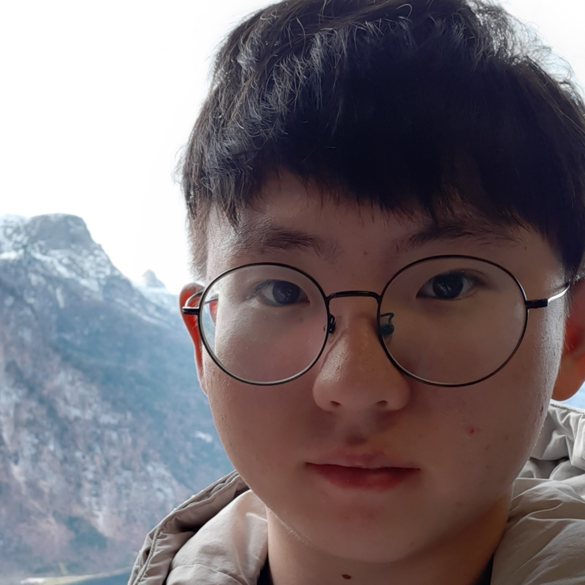
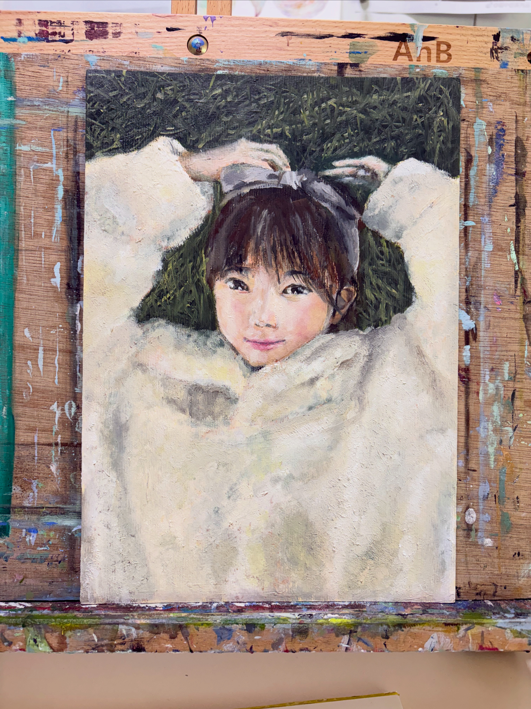
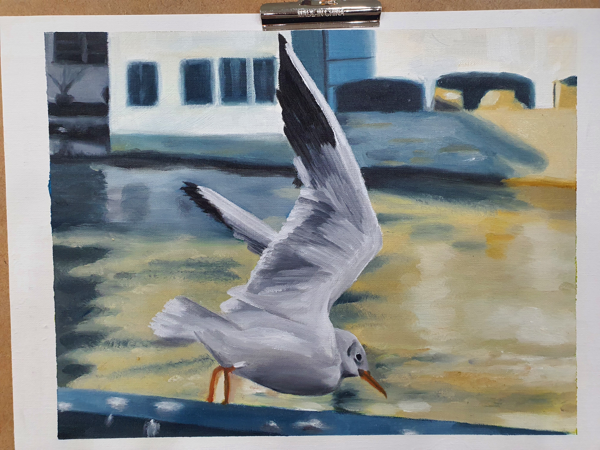
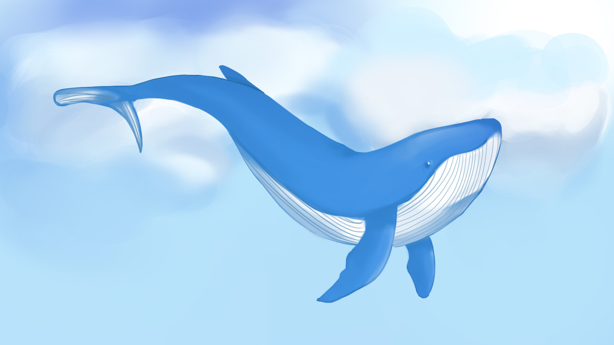
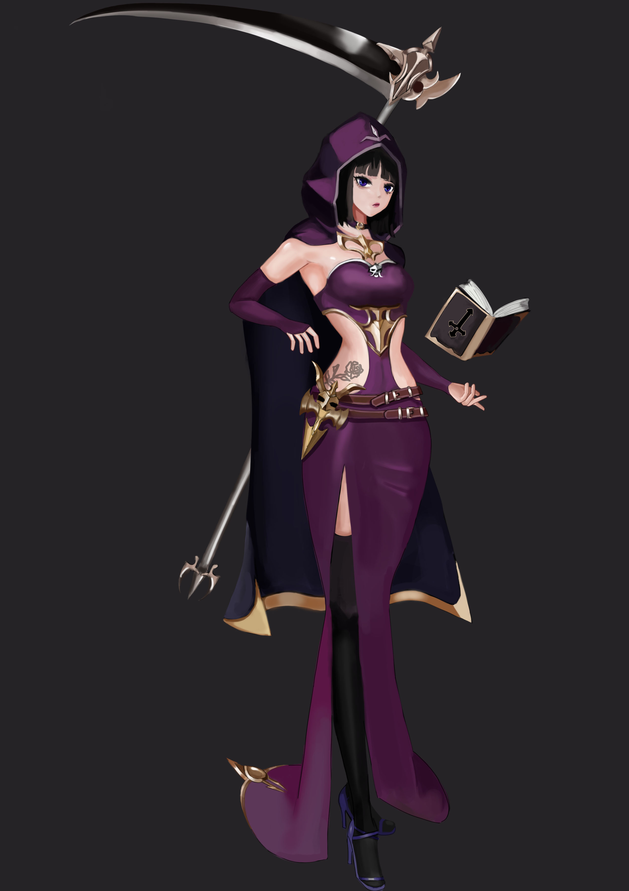

👋 Hello, I'm

AI / Machine Learning Researcher · Affctiv Lab
I am a researcher at Affctiv Lab, bridging cognitive neuroscience and deep learning, with a growing interest in human-AI interaction through multimodal agents.
About
I am a researcher at Affctiv Lab, working at the intersection of cognitive neuroscience and deep learning. My research focuses on EEG-to-text decoding, translating raw brain signals into natural language and making brain-computer interfaces semantically interpretable. More recently, my work has extended toward human-AI interaction. I design agents that perceive multimodal inputs such as speech, text, and vision, and build sLLM-based social robots that engage children on the autism spectrum through interactive, real-world tasks.
Affctiv AI
Researcher
Incheon, Korea
M.S. · Inha University
Master of Science
Electrical and Computer Engineering · Incheon, Korea
B.S. · Sunmoon University
Bachelor of Science in Engineering
Division of Computer Science and Engineering · Asan, Korea
Research
Findings of the 2026 Conference on Empirical Methods in Natural Language Processing (EMNLP 2026 Findings)
Latent-Level Uncertainty Resolution for Stable EEG-to-Text Decoding under Cross-Subject Variability
Work
Personal



